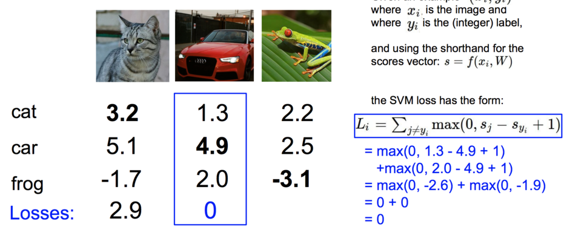
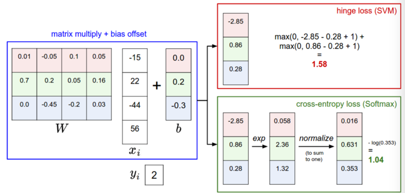

线性分类
Table of Contents
Overview
这部分会有两个主要的部分，score function 和 loss function。
标签分值
每个 image 计算对应的 label score。 这里有一个线性分类器的数学描述。
\begin{align} f(x_i, W, b) = W x_i + b \end{align}其中，W 是 K*D 维的矩阵。
一个常见的做法是将 W 和 b 放到一个矩阵中。
\begin{align} f(x_i, W) = W x_i \end{align}
我们在矩阵中增加一个为 1 的行就可以了。
Loss function
上面的 f 函数其实就是 score function。 Loss function 有时候也叫做 cost function， 它衡量了我们对输出的 score 的不满意程度。
Lost function tells how good our classifier is。
其定义是这样的。
\begin{align} L = \sum_{i} L_i(f(x_i, W), y_i)) \end{align}SVM
上面说到了 loss function，但是它的定义是什么呢？
其中一种定义就是 Multiclass Support Vector Machine(SVM) loss。
其中 \(x_i\) 是代表图像， \(y_i\) 代表标签，是一个数字，而 \(s = f(x_i, W)\) 。
这样空洞的说理论有些不懂。下面看个例子。 这里首先是标签分值。
这只是一部分，实际上应该是 D 维的，详细看上面。 这部分数据就是通过 \(f(x, W)\) 计算得到的。
首先我们先看下猫的这部分。
其中 \(s_{y_i}=3.2\) ，所以
然后是汽车。

最后是 frog。
它的值达到了 12.9，说明对它的打分 -3.1 偏差非常的大。
def L_i_vectorized(x, y, W):
scores = W.dot(x)
margins = np.maximum(0, scores - scores[y] + 1)
margins[y] = 0
loss_i = np.sum(margins)
return loss_i
另外，loss function 也可以这样写。
\begin{align} L_i = \sum_{j\neq y_i} \max(0, w_j^T x_i - w_{y_i}^T x_i + \Delta) \end{align}对于整个数据集的 loss 其实就是平均一下。
例如，
\begin{align} L &= (2.9 + 0 + 12.9) / 3\\ &=5.27 \end{align}有点要注意的是，有时候在计算 loss function 的时候，有些人用 max() 后在平方一下，这样做有时确实很好。但是不平方是标准做法，这个要取决于交叉验证(cross validation)。
正则化（Regularization）
上面提到的 Loss function 有一个 bug，我们需要作出修正所以有了这个正则化。假设我们有一个 W 能够对每一个例子都能正确的分类（L=0），那这个 W 其实是不唯一的。当我们给定任何一个 \(\lambda W\) 并且有 \(\lambda > 1\) 时，都能得到 \(L=0\) 这个结果。但是这是的 score 函数却差的很多。为了消除这种现象，我们就引入了正则化修正（In other words, we wish to encode some preference for a certain set of weights W over others to remove this ambiguity）。
我们需要添加一个修正叫做 regularization penalty \(R(W)\) 。
现在 Loss function 变成这样了：
\begin{align} L = \underbrace{ \frac{1}{N} \sum_i L_i }_\text{data loss} + \underbrace{ \lambda R(W) }_\text{regularization loss} \\\\ \end{align}关于 \(R(W)\) 有几种形式：
L2 Regularization
\begin{align} R(W) = \sum_k\sum_l W_{k,l}^2 \end{align}L1 Regularization
\begin{align} R(W) = \sum_k\sum_l |W_{k,l}| \end{align}Elastic net (L1 + L2)
\begin{align} R(W) = \sum_k\sum_l \beta W_{k,l}^2 + |W_{k,l}| \end{align}
Python 代码
# 没有加正则化的情况
def L_i(x, y, W):
"""
unvectorized version. Compute the multiclass svm loss for a single example (x,y)
- x is a column vector representing an image (e.g. 3073 x 1 in CIFAR-10)
with an appended bias dimension in the 3073-rd position (i.e. bias trick)
- y is an integer giving index of correct class (e.g. between 0 and 9 in CIFAR-10)
- W is the weight matrix (e.g. 10 x 3073 in CIFAR-10)
"""
delta = 1.0 # see notes about delta later in this section
scores = W.dot(x) # scores becomes of size 10 x 1, the scores for each class
correct_class_score = scores[y]
D = W.shape[0] # number of classes, e.g. 10
loss_i = 0.0
for j in xrange(D): # iterate over all wrong classes
if j == y:
# skip for the true class to only loop over incorrect classes
continue
# accumulate loss for the i-th example
loss_i += max(0, scores[j] - correct_class_score + delta)
return loss_i
下面是添加了使用向量表示的代码，这种方式更加高效：
def L_i_vectorized(x, y, W):
'''
A faster half-vectorized implementation. half-vectorized
refers to the fact that for a single example the implementation
contains no for loops, but there is still one loop over the
examples(outside this function)
'''
delta = 1.0
scores = W.dot(x)
margins = np.maximum(0, scores - scores[y] + delta)
margins[y] = 0
loss_i = np.sum(margins)
return loss_i
实际考虑
上面中有 \(\Delta\) 是一个 magic number, 我们应该如何得到它？ 可以通过交叉验证来得到，但是大部分情况设为 1 是个不错的选择。
Softmax 分类器
SVM 和 Softmax 分类器是最常用的分类器。
\begin{align} L_i = -\log\left(\frac{e^{f_{y_i}}}{ \sum_j e^{f_j} }\right) \hspace{0.5in} \text{or equivalently} \hspace{0.5in} L_i = -f_{y_i} + \log\sum_j e^{f_j} \end{align}其中 softmax 函数为
\begin{align} f_j(z) = \frac{e^{z_j}}{\sum_k e^{z_k}} \end{align}看下面这个图片可能更加清晰一些
编程实践：数值稳定
编程时 softmax 函数我们可以做一个变换，分子分母同乘以 \(C\) ：
\begin{align} \frac{e^{f_{y_i}}}{\sum_j e^{f_j}} = \frac{Ce^{f_{y_i}}}{C\sum_j e^{f_j}} = \frac{e^{f_{y_i} + \log C}}{\sum_j e^{f_j + \log C}} \end{align}然后， \(C\) 为 \(\log C = -\max_j f_j\) 。
下面是代码：
f = np.array([123, 456, 789])
p = np.exp(f) / np.sum(np.exp(f))
# 变换后
# 其实就是将 f 数值平移，将最大值变为 0
f -= np.max(f) # f 变成了 [-666, -333, 0]
p = np.exp(f) / np.sum(np.exp(f))
例如
import numpy as np
f = [3.2, 5.1, -1.7]
f -= np.max(f)
p = np.exp(f) / np.sum(np.exp(f))
print(p) # [ 0.12998254 0.86904954 0.00096793]
SVM 和 Softmax 比较
首先，通过图片看下结果

深入阅读
- Deep Learning using Linear Support Vector Machines from Charlie Tang 2013 presents some results claiming that the L2SVM outperforms Softmax.